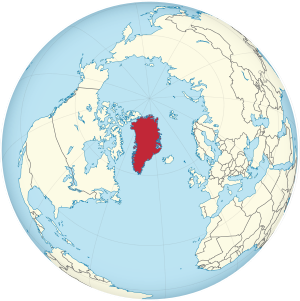

그린란드는 지리적-문화적으로는 북아메리카에, 정치적으로는 유럽에 속한다.
남동쪽으로 대서양과 아이슬란드, 동쪽으로 그린란드 해, 북쪽으로 북극해,
서쪽으로 배핀 만과 캐나다의 누나부트 준주가 자리잡고 있다. 섬의 81%가 얼음으로 덮여있고,
북아메리카 북동부 대서양과 북극해 사이에 있는 섬이다. 섬의 85%가 빙상으로 덮여 있다.
10세기 말 노르만 인이 발견하여 '초록 섬'이라는 뜻의 이 이름을 붙였다고 한다.
면적은 2,166,086km2이다. (12 위)
